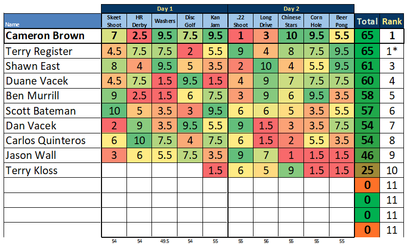
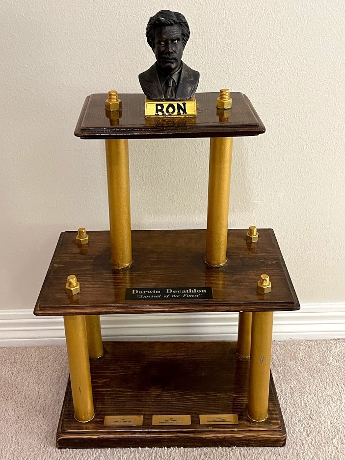

In addition to the stunning trophy pictured above, Champions have the honor of shaping future events.
Below are the results from the 2022 competition

The annual champion gets to remove one of the 10 decathlon events and replace it with an event of their choice
for the
following year's competition. Past winners have enojyed the prestige of proudly displaying the trophy
on their
mantle, using it as collateral for large loans, or simply as a way to get into the
most exclusive night clubs.
Hopefully this year's champion will be tossing the trophy between boats during the victory parade.
This page highlights the elite class of decathletes who have achieved to the ultimate accomplishment
Champion of the Darwin Decathlon.
2015 - Andy Conacher (74 pts)
2018 - Ben Murrill (81 pts)
2019 - Ryan Whitzel (75 pts)
2021 - Dan Vacek (71 pts)
2022 - Cameron Brown (65 pts) Terry Register
Current Champion: Cameron Brown
By way of sudden death duel, CamBro took home the Ron in '22
For the first time in history, the Darwin Decathlon resulted in a tie.
Terry Register earned the heads-up challenge with Cameron for the title, but the winds proved too strong in washers.
